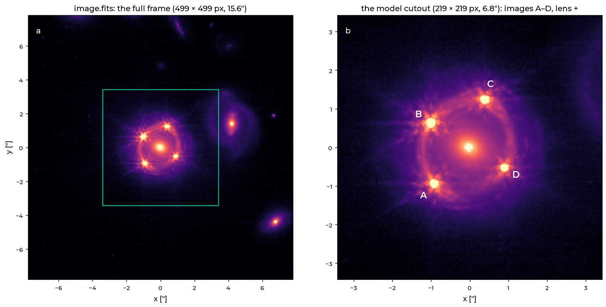
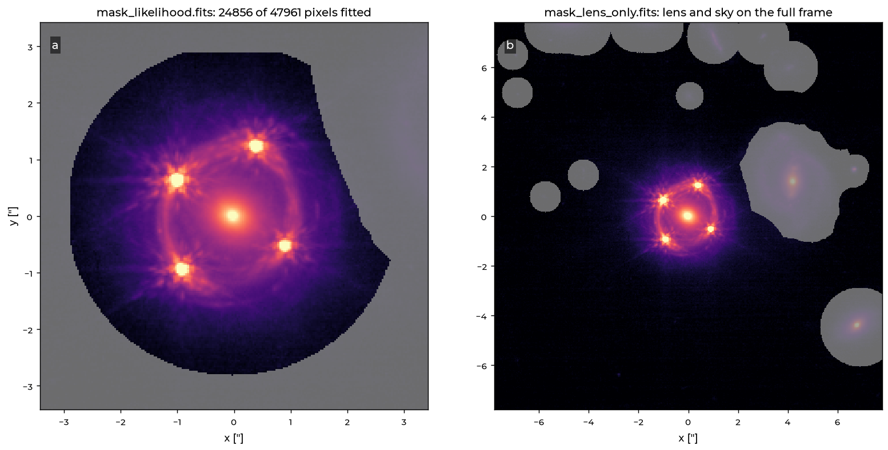
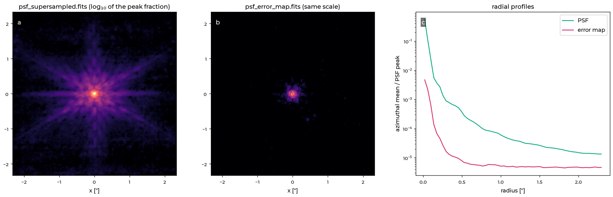
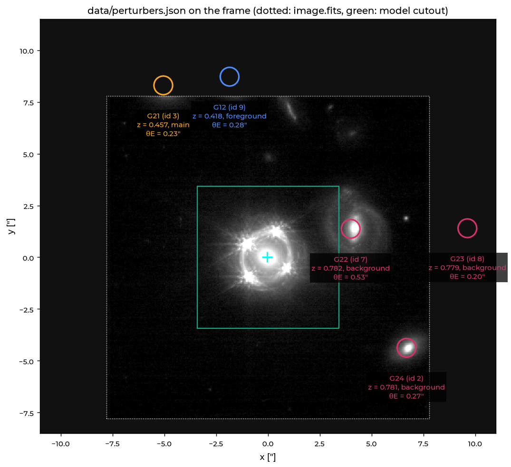
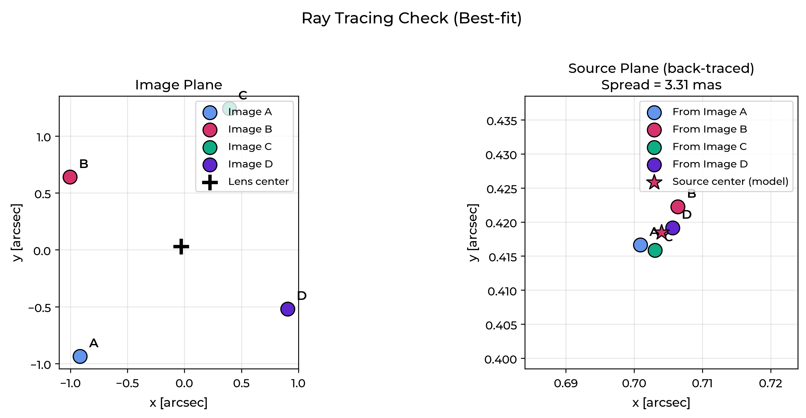
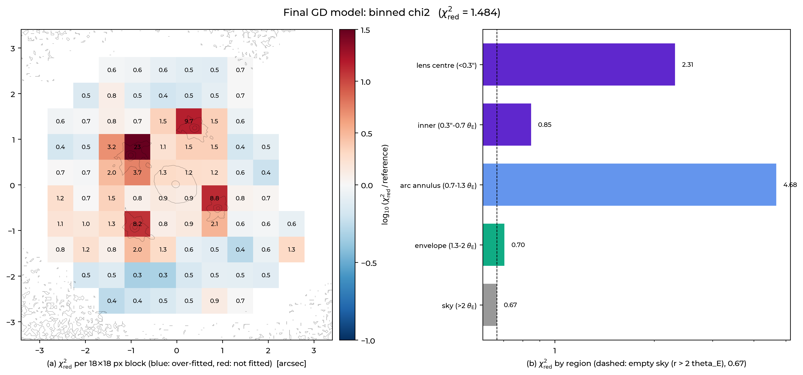

Lensed quasar: HE0435−1223
JWST/NIRCam F150W · a quasar lensed into four images, with measured time delays · all inputs ship with ALPACA · no lens-modelling experience needed · about 1 h of reading; the fit takes 40 min on a GPU, sampling a few hours on two GPUs.
Step 0What you will do
HE0435−1223 is a quasar (a very bright active galactic nucleus) at redshift z = 1.689, lensed by an elliptical galaxy at z = 0.455 into four images, A to D, about 1.2″ from the lens. The quasar's host galaxy is lensed too and forms a faint Einstein ring through the images. The brightness of the quasar varies, and the variations arrive at the four images days apart: these time delays were measured by the COSMOGRAIL monitoring campaign. Combined with a lens model they measure the Hubble constant H0, which is why HE0435 is one of the TDCOSMO lenses.
You will fit ALPACA's worked example. Everything it needs ships with ALPACA in data/, so you
do not prepare any data; instead, every input is explained so that you can make the same files for your own
lens. By the end you will have a best-fit model and a posterior, and you will know how to judge both.
- data
- JWST/NIRCam F150W i2d mosaic (programme 1198), 0.0312″/px
- lens / source z
- 0.4546 / 1.689
- Einstein radius
- ≈ 1.1″
- model
- power-law mass (EPL) + external shear · 5 nearby galaxies (multi-plane) · double → triple Sérsic lens light · point images for the quasar · shapelets → pixelated host galaxy · PSF from stars, refined in the fit
- constraints
- the image, the four image positions, three time delays
- hardware
- one GPU for the fit (40 min); two GPUs for sampling; a laptop for a quick look
If you are new to lens modelling, read the primer first, or step 1 of the galaxy–galaxy tutorial (with a lens you can build yourself): it explains what a lens model is and what residuals and χ² mean. This tutorial adds what is special about quasars.
Step 1Quasar lenses in a nutshell
A lensed quasar adds two kinds of information to the image:
- Point images. The quasar is so small that each image is a copy of the PSF. Their positions are measured
to a few milliarcseconds and must all trace back to one point in the source plane: a very precise constraint
on the mass. ALPACA models each image as a scaled PSF (
light.point_sources) and checks the positions in the image plane (likelihood.astrometry_mode: "image_plane", the default). - Time delays. Light from the four images travels different paths through the lens's potential, so they arrive at different times. The delays depend on the mass model and on the time-delay distance DΔt, which is inversely proportional to H0.
The rest is as for any lens: the lens light, the host galaxy (an extended, lensed source like the ring of a galaxy–galaxy lens) and the PSF. Two things make quasars harder: the bright point images make every PSF error visible, and the cosmology result must be protected from your expectations, which is what blinding is for (step 12).
Try it: why four images?
In the lens playground, make the source small (0.03″), give the lens an axis ratio of 0.7 and drag the source inside the red diamond (the caustic): four images. Move it out: two. HE0435's quasar sits inside the diamond, close to its centre, which is why its four images form an almost symmetric cross.
Step 2Install ALPACA
git clone https://github.com/hkrizic/alpaca.git && cd alpaca
python3.12 -m venv .venv && source .venv/bin/activate # a new, empty Python environment
python -m pip install --upgrade pip
python -m pip install -e ".[gpu]" # NVIDIA GPU on Linux (CUDA 12)
# python -m pip install -e ".[cpu]" # CPU only
# python -m pip install -e ".[apple]" # Apple M-series Mac (GPU, float32)
alpaca-device # prints the device ALPACA will use
ls data/The repository root is your run folder: data/ holds the inputs, config.json the
configuration, run_alpaca.py the run script. More options are in the
installation guide.
Step 3The input files
| file | what it is | size | where it is set |
|---|---|---|---|
image.fits | full frame centred on the lens, sky subtracted | 499 × 499 px (15.6″) | IMAGE_PATH in run_alpaca.py |
noise_map.fits | 1σ per pixel, same units | 499 × 499 | NOISE_MAP_PATH |
mask_likelihood.fits | pixels of the model cutout used in the fit (1 = use) | 219 × 219 (6.8″) | data.likelihood_mask_path |
mask_lens_only.fits | lens and sky on the full frame, for the lens-light refit | 499 × 499 | light.lens.refit.mask_path |
psf_supersampled.fits | the PSF, 3× supersampled, sum 1 | 447 × 447 | PSF_PATH |
psf_starred_seed.npz | STARRED parameters; the live PSF is built from them | psf.joint.seed_path | |
psf_error_map.fits | uncertainty of each PSF pixel | 447 × 447 | psf.input.error_map_path |
perturbers.json | nearby galaxies: positions, redshifts, masses | 5 galaxies | mass.perturbers.path |
The quasar's image positions and the time delays are not files: the positions go into
run_alpaca.py (step 9), the delays into config.json (step 10). How such files are made
from a raw JWST mosaic is shown in the galaxy–galaxy tutorial
(steps 4–9); for a quasar the same procedure works, plus the image positions. The
configurator can crop and mask a FITS file in the browser.
Step 4Look at the data

image.fits, the full frame, with the model cutout (green). Two galaxies to the east
and south-east are perturbers (step 8). (b) The cutout: the four quasar images A–D with JWST's diffraction
spikes, the lens galaxy (+), and the faint ring of the host galaxy through the images. Asinh stretch.The ring carries most of the information on the radial profile of the mass; the images pin down its overall
scale and shape. ALPACA models only the central cutout (219 × 219 px, data.cutout_size); the
full frame is used once, to fit the lens light's faint wings and the sky.
Step 5Check the noise
Compare the noise map with the real scatter of the image in empty sky. In the viewer, choose data, untick grey out masked pixels and drag a box over an empty corner (the model and residual tabs show the best fit of step 15):
import numpy as np
from astropy.io import fits
img, err = fits.getdata("data/image.fits"), fits.getdata("data/noise_map.fits")
box = (slice(20, 52), slice(20, 52)) # an empty 1" box (look at the image first!)
print(np.std(img[box]) / np.mean(err[box])) # about 0.7: drizzled mosaics have correlated noiseAbout 0.7 is expected for JWST mosaics (see the galaxy–galaxy tutorial for why). It means a perfect model sits near χ²red ≈ 0.5–0.7 in empty sky, not at 1. A ratio far from that points to a unit error: fix it before modelling.
Step 6Masks

The likelihood mask keeps the lens, the four images and the ring, and removes everything that is not modelled.
The lens-only mask removes every source except the lens. The quasar images may stay in the lens-only mask:
ALPACA masks them itself in the lens-light refit (light.lens.refit.ps_treatment: "mask").
Step 7The PSF
For a quasar the PSF matters most: each image is a copy of it, and the images are 100–1000 times brighter
than the noise, so a PSF that is wrong by 1 % of its peak leaves residuals of many σ. ALPACA's default
psf.mode: "joint" starts from a PSF built with STARRED
from stars in the same mosaic and refines it during the fit, within the error map. The point images themselves
then help to correct the PSF.

Even so, the cores of the images are never fitted to the noise level: tiny PSF variations across the field,
pixel sampling and detector effects remain. ALPACA handles that with the PSF-error term: after the fit it
adds to the noise of every pixel an amount proportional to the point-source model there,
σeff² = σ² + b²·PS², with one fitted number b (likelihood.noise_model.use_psf_error_map:
true). That keeps the cores from dominating the posterior.
Step 8Nearby galaxies (perturbers)
Galaxies close to the line of sight bend the light too. ALPACA calls them perturbers: each gets its own mass profile (by default a singular isothermal sphere, SIS, whose only parameter is its Einstein radius) in addition to the main lens. They are listed in a catalogue, a small JSON file, and switched on with one line of the configuration. This step explains the file from zero, because it is the input that most often goes wrong silently.
8a · Which galaxies need a mass
A galaxy matters if it changes the light paths by more than the data can tell. The usual measure is the flexion shift, the change of the image positions that a perturber's tidal field causes beyond what the external shear already absorbs:
Δ3x = θE,main² · θE,pert² / d³
with d the distance between the two galaxies. Include every galaxy with Δ3x > 10⁻⁴″, and every galaxy inside or touching the ring. For HE0435 that gives five galaxies within 10″. Galaxies further out act like a smooth shear and convergence, which the external shear and the mass-sheet degeneracy already cover.
8b · The catalogue file
HE0435's catalogue, data/perturbers.json, has a target block (the lens) and a list of
perturbers. One entry, shortened:
{
"target": {
"ra_deg": 69.56225625, "dec_deg": -12.28742056, // the LENS position (its light centroid)
"z_lens": 0.4546, "z_source": 1.689, // redshifts of lens and source
"theta_E_main_arcsec": 1.182, // main lens, for the flexion shift
"pix_scale_arcsec": 0.031229 // pixel scale of the frame pixel_xy refers to
},
"perturbers": [
{
"id": 7, // a number; the sampled parameters are called pert7_...
"ra_deg": 69.56154431, "dec_deg": -12.28837431, // its position on the sky
"pixel_xy": [7095.80, 3612.92], // the same position in pixels of the MOSAIC
"redshift": {"z": 0.782133, "source": "spec:SIMBAD"}, // required; decides its lens plane
"SIS_profile": {"sigma_kms": 209.5, "theta_E_arcsec": 0.525}, // its mass (see 8e)
"flexion_shift_arcsec": 0.00089,
"notes": "[MKP2005] G22"
},
...
]
}(The // comments are for this page only; JSON files cannot contain comments.) Every field a
perturber can have:
| field | required | meaning |
|---|---|---|
id | yes | an integer; the parameters are named pert<id>_theta_E,
pert<id>_center_x, … |
ra_deg, dec_deg | one of the two | sky position (degrees) |
pixel_xy | pixel position [x, y]; its meaning depends on whether RA/Dec are given (8c) | |
redshift.z | yes | the redshift; a missing redshift is an error. Unknown? Use the lens
redshift and say so in notes |
profile.theta_E_arcsec | yes | the catalogue Einstein radius: the centre of its prior
(the older spelling SIS_profile.theta_E_arcsec, as in this file, also works) |
profile.mass_model | no | "SIS" (default), "SIE",
"EPL" or "EPL+Shear": more freedom for a massive neighbour |
profile.sigma_kms | no | the velocity dispersion θE came from (for your records) |
theta_E_prior_sigma | no | with it, the θE prior is a truncated Gaussian
(catalogue value ± this); without it, a flat prior from 0 to theta_E_max_factor × the catalogue value |
theta_E_max_factor | no | the upper bound of the θE prior, in units of the catalogue value (default 3) |
fix_positions, position_sigma_arcsec | no | per-galaxy override of the position prior (8f) |
lens_light | no | {"model": "Sersic", "lensed": false} also models the
galaxy's light ("Sersic", "double-sersic", "MGE", …). Without it, mask the
galaxy's light |
flexion_shift_arcsec, notes | no | for selection
(min_flexion_shift_arcsec) and for you |
8c · Positions: two ways to give them
(1) RA/Dec and mosaic pixels, as in HE0435's file. The target block holds the lens's RA/Dec, each perturber its RA/Dec and its pixel position in the original mosaic. From three or more perturbers ALPACA fits the map from the sky to mosaic pixels (it catches the rotation and orientation of the mosaic), and places every perturber relative to the lens centre it detects in your image. The log reports the fit:
[perturbers] sky->pixel affine fit over 5 perturbers: target at i2d pixel (6967.0, 3569.0), fit RMS = 0.000 pixWith fewer than three perturbers, ALPACA assumes north up and east left, which is wrong for most JWST mosaics (they are rotated). Then use way (2).
(2) Pixels of your own frame (simplest; no coordinates needed). Set ra_deg and
dec_deg to null, give pixel_xy in the pixels of image.fits (x =
column, y = row, counted from 0), and give the frame size as target.npix. ALPACA converts
with position = (pixel − (npix − 1)/2) × pix_scale, i.e. relative to the frame centre. The
galaxy–galaxy tutorial builds such a catalogue step by step.
8d · Redshifts and lens planes
A perturber within mass.perturbers.z_tolerance (0.01) of the lens redshift is placed on the lens's
own plane. All others get their own plane, and ALPACA switches to multi-plane ray tracing automatically,
with distance ratios from a fiducial cosmology (mass.perturbers.cosmology; the ratios do not depend
on H0). HE0435 has one galaxy in front of the lens (G12, z = 0.418), one at the lens redshift (G21)
and three behind it (G22, G23, G24, z ≈ 0.78):
[perturbers] 5 perturber(s) from data/perturbers.json:
id=9 z=0.4184 (foreground) SIS theta_E=0.282" at (-1.855", +8.719") [MKP2005] G12
id=3 z=0.4565 (main ) SIS theta_E=0.235" at (-5.054", +8.300") [MKP2005] G21
id=8 z=0.7792 (background) SIS theta_E=0.203" at (+9.622", +1.401") [MKP2005] G23
id=2 z=0.7806 (background) SIS theta_E=0.273" at (+6.684", -4.372") [MKP2005] G24
id=7 z=0.7821 (background) SIS theta_E=0.525" at (+3.991", +1.372") [MKP2005] G22mass.perturbers.mode: "single_plane" instead puts every perturber on the lens plane (the classic
approximation). Use it for galaxies of unknown redshift, and for a very massive deflector in front of the lens
such as a galaxy cluster: its nearly constant deflection of many arcseconds would otherwise move the lens's
mass away from where its light is seen.
8e · How heavy: the Einstein radius
- From a measured velocity dispersion σ (best): θE = 4π (σ/c)² Dps/Ds, with Dps and Ds the angular-diameter distances from the perturber to the source and from us to the source. The prior width follows from the error of σ (Δθ/θ = 2 Δσ/σ).
- From the light (photometry), relative to the main lens: θE ∝ √L (Faber–Jackson), with about ±40 % prior width. The luminosity depends on the redshift: the same flux at a lower redshift is a fainter, lighter galaxy.
Catalogue values can be badly wrong. G22's 0.53″ comes from photometry; its measured MUSE dispersion gives
0.23″. If you have a spectroscopic σ, use it. This tutorial keeps the shipped catalogue, which has no
theta_E_prior_sigma, so each θE is free between 0 and 3 × the catalogue value.
8f · Switching them on: the configuration
"mass": {
"perturbers": {
"path": "data/perturbers.json", // the catalogue; null = no perturbers
"mode": "auto", // "auto": planes from the redshifts; "single_plane": all on the lens plane
"z_tolerance": 0.01, // |z - z_lens| below this = the lens plane
"min_flexion_shift_arcsec": null, // drop catalogue entries below this flexion shift
"include_ids": null, "exclude_ids": null, // or pick entries by id, e.g. "exclude_ids": [8]
"priors": {
"theta_E_max_factor": 3.0, // flat prior upper bound (when no theta_E_prior_sigma)
"position_sigma_arcsec": 0.3, // Gaussian prior on each position ...
"fix_positions": true // ... or fix them at the catalogue positions
},
"cosmology": {"H0_fid": 70.0, "Om0": 0.3} // for the multi-plane distance ratios only
}
}Fix the positions when they come from the galaxies' light centroids: free positions add two parameters per
galaxy that the data hardly constrain. You can also set the catalogue at the top of run_alpaca.py
(PERTURBERS_PATH = "data/perturbers.json"), which overrides the configuration. Per-galaxy entries in
the catalogue (theta_E_prior_sigma, fix_positions, …) override the priors
block.
8g · Check them

image.fits.- The log: the affine-fit line (RMS well below a pixel), and the list of perturbers with their planes and positions.
- The overlay figure
run/01_input/plots/perturbers_overlay.png(it shows the model cutout, so galaxies further out appear as markers on its edge): every marker must sit on its galaxy. A wrong anchor shifts all perturbers together, and nothing else in the run shows it. - The likelihood mask: the perturbers' light is masked unless you model it (
lens_light). - After the fit:
pert<id>_theta_Ein the log and inparameter_summary.txt. A value at 0 or at the upper bound means the prior or the catalogue value is wrong.
Step 9Image positions
At the top of run_alpaca.py, the approximate positions of the four images, in arcsec from the
frame centre (x to the right, y up, as the image is shown with origin="lower"):
IMAGE_POSITIONS = { # HE0435-1223: A bottom-left, clockwise B, C, D
"A": (-0.906, -0.937),
"B": (-0.999, 0.656),
"C": ( 0.406, 1.249),
"D": ( 0.906, -0.531),
}
REFERENCE_IMAGE = "A" # the delays are measured relative to this image
LENS_POSITION = (0.0, 0.0) # the lens's sub-pixel offset from the frame centre (arcsec)These positions are labels, not measurements: ALPACA detects the four images itself and matches each to the nearest label, so that the delays are assigned to the right images. The log shows the match:
Matched auto-detected positions to reference labels:
A: detected (-0.9056, -0.9369) ref (-0.9060, -0.9370) offset 0.0004"
B: detected (-0.9993, +0.6558) ref (-0.9990, +0.6560) offset 0.0004"
C: detected (+0.4060, +1.2491) ref (+0.4060, +1.2490) offset 0.0002"
D: detected (+0.9056, -0.5309) ref (+0.9060, -0.5310) offset 0.0004"Use the labels of the paper that published the delays, or the labels will not match the delays.
Quiz: you swap the labels of B and D. Does ALPACA notice?
No. The images are still found, the fit of the image is the same, but the delay "A–B" is now compared with the model's A–D delay. The model cannot match the delays, and if it tries, it pulls the mass in the wrong direction. Always take the labels from the delay paper and check the matched table in the log.
Step 10Time delays
The delays go into config.json, exactly as published:
"likelihood": {
"use_time_delays": true,
"time_delays": {
"convention": "t_X - t_Y", // COSMOGRAIL / TDCOSMO: dt_AB = t_A - t_B
"delays": { "AB": [-9.0, 0.8], "AC": [-0.8, 0.7], "AD": [-13.8, 0.8] }, // days, [value, 1 sigma]
"covariance": "independent"
}
}Give the n − 1 delays relative to one image (A here); a published asymmetric error goes in as
[value, +σ, −σ]. ΔtAB = tA − tB = −9.0 days means B varies 9 days
after A. The log repeats the table in both conventions, so you can check it:
Time delays:
Reference image: A (positive dt -> image arrives AFTER A)
time-delay table (3 pair(s), covariance model: independent)
t_A - t_B = -9.00 +/- 0.80 d (B arrives later; minus combined: +0.00 d)
t_A - t_C = -0.80 +/- 0.70 d (C arrives later; minus combined: +0.00 d)
t_A - t_D = -13.80 +/- 0.80 d (D arrives later; minus combined: +0.00 d)
delays used by the likelihood (relative to A; positive = arrives after A):
t_B - t_A = +9.00 +/- 0.80 d
t_C - t_A = +0.80 +/- 0.70 d
t_D - t_A = +13.80 +/- 0.80 dLeave TIME_DELAYS = None in run_alpaca.py: the time_delays block is the
one place for delays, and its convention key makes the sign explicit. The
configurator has a delay editor that writes this block for you.
Quiz: a paper gives ΔtBA = +9.0 days. What do you write?
Either "BA": [9.0, 0.8] with "convention": "t_X - t_Y" (tB − tA
= +9.0), or "AB": [-9.0, 0.8]: both say that B arrives 9 days after A. Check the
"delays used by the likelihood" lines: they must read t_B - t_A = +9.00.
Step 11Build the configuration
The shipped config.json is this lens's configuration: every section is explained in the
galaxy–galaxy tutorial, and the
configurator's lensed quasar preset starts from it. Explore the
configuration of this tutorial; keys marked ■ differ from the shipped
file:
The keys that make it a quasar model:
| key | value | meaning |
|---|---|---|
light.point_sources.enabled | true | the four images are modelled as point sources |
likelihood.astrometry_mode; sigma_ast | "image_plane"; 0.005 | the model images must land within 5 mas of the observed ones, all from one source position (the default) |
likelihood.use_time_delays; time_delays | true; step 10 | the delays enter the likelihood |
likelihood.noise_model.use_psf_error_map; psf_error_b_mode | true; "post_gd_free" | the PSF-error term b of step 7: fitted after the best fit, free during sampling |
likelihood.D_dt_prior | uniform 500–10000 Mpc | a broad prior on the time-delay distance |
likelihood.use_kinematics | false | no stellar velocity dispersion in this tutorial |
mass.perturbers | step 8 | the five galaxies, positions fixed |
light.lens.couple_sersic_centers, couple_sersic_ellipticities | true | one centre and one shape for all lens-light components |
blinding.enabled | true | step 12 |
What this tutorial changes in the shipped file:
| key | shipped | here | why |
|---|---|---|---|
stages.cf_joint.source.loglogavgslope, fluctuations | [−3.5, 0.1], [1, 0.5] (free) | [−2.0, 0.001], [10, 0.01] (fixed) | the smoothness of the host galaxy, chosen by cross-validation (below) |
stages.cf_joint.source.mean_intensity | null | 0.002 | a dark source background, about a tenth of the noise (see the galaxy–galaxy tutorial) |
stages.cf_joint.adam_steps; convergence | 12000; off | 80000; on | run the last stage until it stops improving (here 67 400 steps) |
sampling.nifty.nuts.n_samples | 1000 | 700 | a shorter sampling run for the tutorial (600 warm-up + 700 samples per chain) |
The host galaxy's smoothness
With the shipped, free smoothness prior the log of a first fit warns that the host galaxy's smoothness has railed, i.e. been pushed far outside its prior to fit noise:
[staged:cf_joint] CF hyper source:fluctuations z = +9.62 sigma -> 84.18 (prior 1 +- 0.5) WARNING: RAILED
[staged:cf_joint] CF hyper source:loglogavgslope z = +11.48 sigma -> -2.352 (prior -3.5 +- 0.1) WARNING: RAILEDAs in the galaxy–galaxy tutorial, ALPACA's cross-validation picks the values that predict hidden pixels of the ring best:
python -m alpaca.diagnostics.cf_cv run --field source --slopes -2 -2.5 -3 --fluctuations 2.5 5 10 20| slope | fluctuations | held-out χ² |
|---|---|---|
| −1.75 | 5 | 0.522 |
| −2.0 | 10 | 0.526 |
| −2.0 | 5 | 0.552 |
| −2.5 | 20 | 0.579 |
| −1.5 | 5 | 0.613 |
| free (shipped prior) | 0.738 | |
| −3.0 | 2.5 | 0.963 |
The best values form a flat ridge (−1.75 / 5 and −2.0 / 10 are equally good within the scatter of the folds); any of them predicts much better than the free prior. We fix −2.0 / 10. With the fix the log reports the values at their prior centre:
[staged:cf_joint] CF hyper source:fluctuations z = +1.55 sigma -> 10.02 (prior 10 +- 0.01; at the prior centre 10)
[staged:cf_joint] CF hyper source:loglogavgslope z = +5.55 sigma -> -1.994 (prior -2 +- 0.001; ...) RAILED but the prior is effectively fixed: physical shift +0.00555The second line looks alarming but is harmless: with a prior width of 0.001, a shift of 0.006 is "5.6σ" while it changes nothing physically, and ALPACA says so.
Step 12Blinding
HE0435 measures H0, so its analysis is blinded: the numbers that carry cosmology (DΔt, H0 and the mass slope γ) are stored and shown only as offsets from their posterior mean until the analysis is frozen. You can still see their uncertainties and correlations, and compare models through differences. Set a key once per campaign, outside every file:
export ALPACA_BLINDING_KEY="$(openssl rand -hex 32)" # keep this key private and the same for all runs of a lens
python -m alpaca.unblind run/ # only when the collaboration decides to unblindThis tutorial never shows γ, DΔt or H0; the log says so itself
(blinded run: slope, D_dt, H0, delays and Fermat potentials are never shown here). The best-fit files
(03_multistart/*/best_fit_params_full.npz) contain true values, so treat run folders as internal.
Step 13Run the fit
python run_alpaca.py config.json --fit-only # the best fit only (40 min on a GPU)
python run_alpaca.py config.json # best fit (resumed) + sampling
python run_alpaca.py config.json --fit-only --backend mps --precision float32 # Apple GPU, a quick lookOn a cluster, put the command into a job script. With two GPUs, set
export JAX_PLATFORMS=cuda,cpu (not --backend gpu) so that the two sampling chains can run
in parallel, and request two GPUs of the same type.
The start of the log tells you whether ALPACA read everything right: the device, the cutout, the number of active pixels, the detected lens centre, the five perturbers with their planes, the matched images and the delay table (steps 8–10). Then the fit (abridged from the real log):
ALPACA: gpu / float64 / cuda:0
[cutout] modelling on central 219x219; lens-light refit uses the full 499x499 frame.
Active pixels: 24856/47961 (51.8%)
[setup_lens] Detected lens center: (-0.0312, +0.0000) arcsec
[perturbers] sky->pixel affine fit over 5 perturbers: target at i2d pixel (6967.0, 3569.0), fit RMS = 0.000 pix
PHASE 1: MAP ESTIMATION (stages: gd -> cf_warmstart -> lens_light_refit -> cf_joint)
Phase 1: 32 initial starts (parallel) <- stage 1
[Iteration 1] Best χ²_red: 3.8699
[lens-light refit] triple-sersic (3 profiles): chi2 4.137e+07 -> 1.36e+05 over 3000 steps; PS MASKED (r<0.5", 3188 px); ARC MASKED (5428 px)
[staged:cf_joint] stage 3 stopped: converged after 67400/80000 steps (best at step 66085)
[staged:cf_joint] post-GD psf_error_b fit: b = 0.0625 (loss gain 7240.8)
final chi2_red over the likelihood mask: 1.484 with the effective noise (incl. b), 1.484 with the raw noise map
point-image cores (< 0.12"), chi2_red effective / raw noise: A 28.5 / 28.5 | B 87.9 / 87.9 | C 44.2 / 44.2 | D 41.1 / 41.1
chi2_red by region: lens centre (<0.3") 2.31 | inner (0.3"-0.7 theta_E) 0.85 | arc annulus (0.7-1.3 theta_E) 4.68 | envelope (1.3-2 theta_E) 0.70 | sky (>2 theta_E) 0.67
main-lens theta_E: 1.1101"
at a prior bound (within 2 % of the range): light_n_L3 at lower bound (0.504 in [0.5, 5])
perturber theta_E [prior range]: pert9 0.233" [0, 0.845] | pert3 0.263" [0, 0.706] | pert8 0.0455" [0, 0.61] | pert2 0.385" [0, 0.82] | pert7 0.612" [0, 1.58]
image-plane astrometric residuals, model images vs one common source (mas): A (-4.4, -7.2) | B (-5.0, -8.1) | C (-5.5, -6.9) | D (+5.4, +6.8) rms 6.3
blinded run: slope, D_dt, H0, delays and Fermat potentials are never shown here.
Total runtime: 2354.55s (39.24 min)Timing: 39 min on one NVIDIA RTX A5500 (24 GB). Most of it is stage 3, which runs until it converges.
Step 14Read the stages
The best fit is found in three stages (details in the galaxy–galaxy tutorial):
- Stage 1: 32 random starts with a smooth shapelet source for the host, the four point images and a double-Sérsic lens light. It decides the mass solution (χ²red 3.87: the smooth source cannot follow the ring's detail).
- Stage 2: the lens light (triple Sérsic) alone on the full frame, with the quasar images (magenta) and the ring (emerald) masked.
- Stage 3: the host becomes a pixelated source; everything is fitted together with the live PSF (χ²red 1.48).
After stage 3 ALPACA fits the PSF-error amplitude b and checks the lens equation: the four model images must come from one source position.

best_model/ray_tracing_check.png: the four observed image positions traced back to the
source plane land within 3.3 mas of each other.Stage 2 also prints a warning that one Sérsic index hit its lower bound (S2.n_sersic=0.2); stage 3
frees it again. At the end one lens-light index sits near its bound (light_n_L3 0.504): a flat,
extended light component, harmless for the mass.
Step 15Judge the model
Look at the residuals first: use the viewer of step 5 (residual tab). For a quasar lens the global χ²red (1.48 here) is dominated by the four image cores, so split it by region:
- Image cores (within 0.12″): χ²red 28–88 here. That is normal at this stage: the PSF is never perfect there, and the term b (0.0625) takes care of it in sampling. Look for patterns instead: a ring or a dipole around a core means the PSF or the image position is off.
- The ring and the lens centre carry the information on the mass profile and the lens light. Here the "arc annulus" (4.68) also contains the four images and their spikes, which dominate it; judge the ring between them by eye in the residual map. The lens centre (2.31) shows a small residual of the lens light.
- Envelope and sky must sit at the noise level: 0.70 and 0.67 (step 5).
- Astrometry: the model images match the observed ones to 6.3 mas rms (σast = 5 mas).
- Perturbers: no θE at 0 or at its upper bound. G22 (pert7) comes out at 0.61″, near its photometric catalogue value (0.53″) and well inside its range, but far above the 0.23″ of its measured dispersion (step 8e): in a real analysis, give it a spectroscopic prior. G23 (pert8) is nearly massless (0.05″).
- Prior bounds and the source-smoothness report, as for any lens.

best_model/chi2_binned.png: (a) χ²red in blocks relative to the empty sky; the
red blocks are the image cores. (b) χ²red by region; the dashed line is the empty sky.Quiz: why not mask the four image cores and be done with it?
Because the cores carry the image positions and fluxes, and the PSF refinement learns from them. Masking them throws away the most precise constraint of a quasar lens. ALPACA keeps them and down-weights only what the PSF cannot model, through the term b.
Step 16Sample the posterior
Sampling starts NUTS from the best fit, with the PSF frozen and the term b free. Check divergences (0 is ideal),
R̂ below 1.01 for the lens parameters, and an effective sample size (ESS) of a few hundred for the quantities you
report. All of them are printed at the end of the log and stored in
04_sampling/nifty_nuts/nifty_nuts_diagnostics.json.
Blinded results: 05_posterior/samples/parameter_summary.txt lists every non-cosmological parameter
with its uncertainty, and the blinded quantities as offsets. Open run/ in the
analysis app: it stays blinded.
Step 17Where to go next
- Seeds and solutions: rerun with other random seeds; JWST lens models can have several discrete solutions, so never trust a single run.
- Systematics: change one thing at a time (multipoles
mass.main.multipoles.orders, the lens-light model, the source prior, perturber priors, the PSF) and compare the blinded DΔt offsets. - Stellar kinematics break the mass-sheet degeneracy:
likelihood.use_kinematics(see the documentation). - Several bands with one mass model: ALPACA's multiband mode (
run_multiband.py). - Inspect the run in the analysis app: it stays blinded and needs the key only for its computations.
★The same with an AI assistant
Instruction files in the repository's llm/ folder let a terminal assistant prepare the data,
write the configuration and judge the fit with you. It keeps the analysis blinded.
cd alpaca && claude
> Read llm/2_ALPACA_PREPARE_DATA.md and prepare data/image.fits. It is HE0435-1223 (blinded cosmography lens);
the published delays are dt_AB = -9.0±0.8, dt_AC = -0.8±0.7, dt_AD = -13.8±0.8 days (dt_XY = t_X - t_Y).
> Read llm/3_ALPACA_MODELLING.md and judge the first fit.